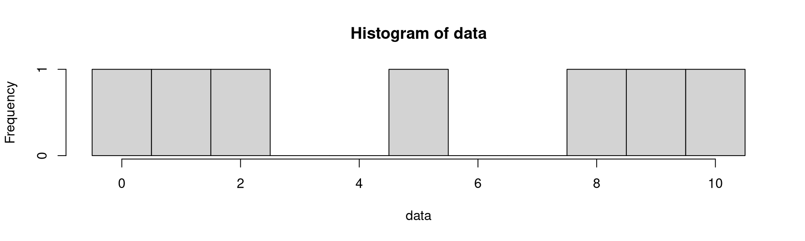
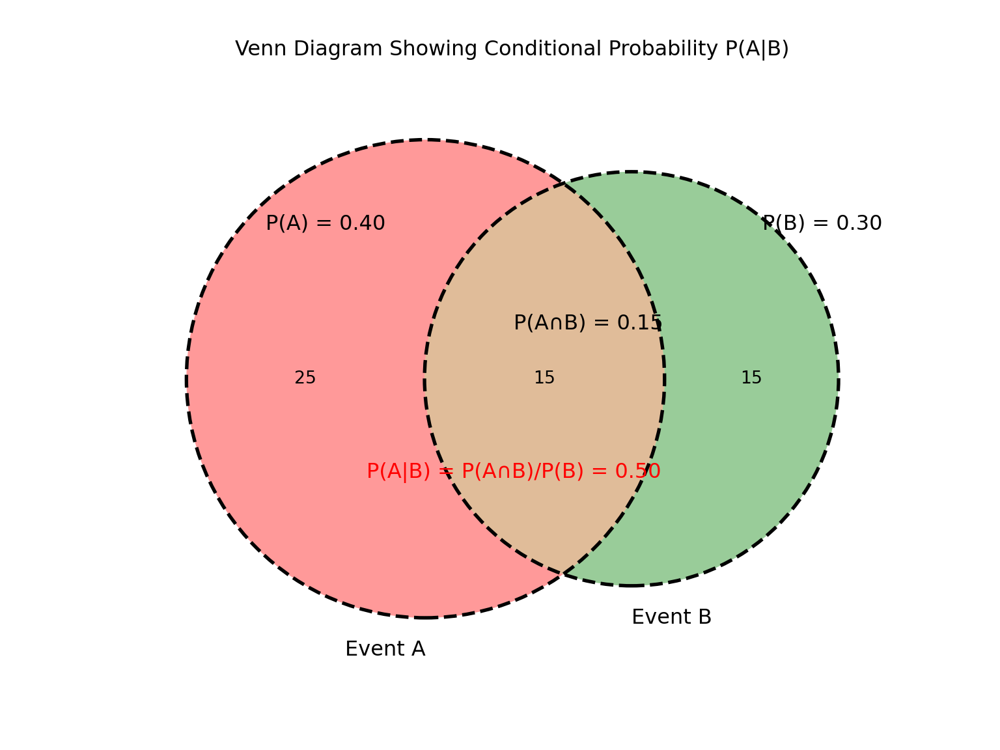

[1] 16.66667
Statistics
Econometrics = using data to measure causal effects
Economic theory suggests important relationships (cause-and-effect), often with policy implications.
Conclusion: we need to test these relationships in the real world, using data
Examples of RQs that econometrics can help answer:
By how much does access to high-speed internet increase entrepreneurship in rural areas?
What is the effect of paid parental leave policies on women’s long-term labor force participation?
What is the impact of sugar taxes on obesity rates and purchasing behavior?
Does stricter gun control legislation reduce violent crime rates?
What is the effect of trade tariffs on domestic manufacturing employment?
Ideally, we would like an experiment (randomization) to answer these questions
Similarly, we would randomly give access to high-speed internet to some individuals, not to others, and see if this helps promote entrepreneurship
What would an experiment look like allowing you to measure the impact of gun control legislation on violent crime rates?
In real life, and also in your thesis, you will probably only have observational data, not experimental data
However, with the right tools and clever use of the data, we can still make inference about a causal relationship
Just running a regression model without thinking about, and justifying, its assumptions will get us nowhere
Tools like statistics and probability theory will allow us to analyze models to determine whether we can indeed interpret our estimates causally
We are working towards estimating a multivariate (or multiple) population model of the form: \[ Y_i = \beta_0 + \beta_1 X_{1i} + \beta_2 X_{2i} = \dots + \beta_k X_{ki} + \epsilon_i \]
Example we take here: is there a difference in starters’ earnings between sociology and economics graduates?
This leads us to formulate hypotheses:
\[\begin{align} &H_0: \text{There is no difference in starting salaries} \newline &H_A: \text{There is a difference in starting salaries} \end{align}\]
Before we start thinking about a regression model, we have to think about how our RQ relates to statistics:
Usually, in econometrics, the outcome variable (in this case, earnings/salary) is seen as a random stochastic variable, which can depend on other, additional random or non-random variables
Once we have found out that and have collected data, we can numerically summarize the random variable (univariate analysis)
For a discrete random variable \(X\), the expected value is \(\mathbb{E}[X] = \mu_X = \sum_{i=1}^{N} Pr(X = x_i) \cdot x_i\)
In words, the expected value of \(X\) is its average value (i.e. the mean starting salary) in the population: calculated by weighting each value with the probability that it comes with.
\[\begin{align} Var(X) &= \mathbb{E}[(X - \mathbb{E}[X])^2] = \sum_{i=1}^N (x_i - \mu_x)^2 \mathbb{P}(X=x_i) \newline &= \mathbb{E}[X^2] - (\mathbb{E}[X])^2 = \mathbb{E}[X^2] - \mu_x^2 \end{align}\]
The variance (denoted as \(\sigma^2\)) measures the spread or the dispersion of a pdf
The standard deviation (denoted \(\sigma\) is the square root of the variance:
\[ \sigma_X = \sqrt{Var(X)} \]
| \(x_i\) | \(\mu_X\) | \((x_i - \mu_X)\) | \((x_i - \mu_X)^2\) | \(f(x_i)\) | \((x_i - \mu_X)^2 \cdot f(xi)\) |
|---|---|---|---|---|---|
| 1 | 3.5 | -2.5 | 6.25 | 1/6 | 1.0417 |
| 2 | 3.5 | -1.5 | 2.25 | 1/6 | 0.3750 |
| 3 | 3.5 | -0.5 | 0.25 | 1/6 | 0.0417 |
| 4 | 3.5 | 0.5 | 0.25 | 1/6 | 0.0417 |
| 5 | 3.5 | 1.5 | 2.25 | 1/6 | 0.3750 |
| 6 | 3.5 | 2.5 | 6.25 | 1/6 | 1.0417 |
| Total | 17.5 | 1 | 2.9167 |
Variance \(\sigma^2_X = 2.92\), Standard Deviation \(\sigma=\sqrt{2.92}=1.71\)
WAGE1.DTA, and calculate the expected value, variance and standard deviation:After analyzing univariate statistics such as the expected value, variance and standard deviation of a r.v., we might consider the relationship between two r.v.’s
To do this, we need the concepts of joint, marginal and conditional distributions
A joint distribution is the probability distribution of two or more random variables simultaneously
Example: education level (\(X\)) and income (\(Y\)) in a survey.
The marginal distribution is just a pdf. It is obtained by “summing out” the other r.v.:
Represents the probability distribution of one r.v., without taking the other into account
Example: joint distribution of education and income:
| Y=$30k | Y=$60k | Y=$90k | Marginal | |
|---|---|---|---|---|
| X=HS | 0.10 | 0.05 | 0.01 | 0.16 |
| X=BSc | 0.15 | 0.20 | 0.10 | 0.45 |
| X=MSc | 0.05 | 0.15 | 0.19 | 0.39 |
| Marginal | 0.30 | 0.40 | 0.30 | 1.00 |
\[ P(Y=y | X=x) = \frac{P(X=x, Y=y)}{P(X=x)} \] Graphically:
| Y=$30k | Y=$60k | Y=$90k | Marginal | |
|---|---|---|---|---|
| X=HS | 0.10 | 0.05 | 0.01 | 0.16 |
| X=BSc | 0.15 | 0.20 | 0.10 | 0.45 |
| X=MSc | 0.05 | 0.15 | 0.19 | 0.39 |
| Marginal | 0.30 | 0.40 | 0.30 | 1.00 |
\[\begin{align} \mathbb{P}(Y=90k|X=MSc) &=\frac{\mathbb{P}(Y=90k, X=MSc)}{\mathbb{P}(X=MSc)} = \newline &=\frac{0.19}{0.39}\approx 0.49 \end{align}\]
| Y=$30k | Y=$60k | Y=$90k | Marginal | |
|---|---|---|---|---|
| X=HS | 0.10 | 0.05 | 0.01 | 0.16 |
| X=BSc | 0.15 | 0.20 | 0.10 | 0.45 |
| X=MSc | 0.05 | 0.15 | 0.19 | 0.39 |
| Marginal | 0.30 | 0.40 | 0.30 | 1.00 |
\[ P(X = x_i , Y=y_j ) = P(X = x_i ) \cdot P(Y=y_j ) \]
\[ E[Y|X=x] = \sum_{i=1}^N Pr(Y = y_i | X=x) \cdot y_i \]
\[\begin{align} Cov (X, Y) = \sigma_{XY} &= \mathbb{E} \left[ (X - \mathbb{E}[X]) (Y- \mathbb{E}[Y]) \right] \newline &= \mathbb{E}[XY] - \mathbb{E}[X]\mathbb{E}[Y] \end{align}\]
If Cov (X , Y) > (<) 0 : X and G are positively (negatively) linearly associated
If Cov (X , G ) = 0 : X and G are not linearly associated
When two variables are independently distributed, their covariance is 0. But the converse need not be true: a covariance of 0 does not necessarily imply independence as the association may be non-linear
\[ Corr(X,Y) = \frac{Cov(X,Y)}{\sqrt{Var(X)} \sqrt{Var(Y)}} \]
Now, we have used univariate statistical concepts such as expected value, variance, and standard deviation to summarize a potential variable of interest \(Y\) in the population
We have also focused on its potential relationship with another population variable \(X\) through investigating aspects of the joint and conditional distribution, conditional expectation and covariance/correlation.
However, in real life, we almost never observe the population. We only observe a sample.
Hence, we need to use the sample (a dataset) to infer something about the population of interest.
Call:
lm(formula = cyl ~ mpg, data = mtcars)
Residuals:
Min 1Q Median 3Q Max
-1.8569 -0.6484 0.1205 0.5965 1.5876
Coefficients:
Estimate Std. Error t value Pr(>|t|)
(Intercept) 11.26068 0.59304 18.99 < 2e-16 ***
mpg -0.25251 0.02831 -8.92 6.11e-10 ***
---
Signif. codes: 0 '***' 0.001 '**' 0.01 '*' 0.05 '.' 0.1 ' ' 1
Residual standard error: 0.95 on 30 degrees of freedom
Multiple R-squared: 0.7262, Adjusted R-squared: 0.7171
F-statistic: 79.56 on 1 and 30 DF, p-value: 6.113e-10import statsmodels.formula.api as smf
model = smf.ols('cyl ~ mpg', data=r.mtcars)
results = model.fit()
print(results.summary()) OLS Regression Results
==============================================================================
Dep. Variable: cyl R-squared: 0.726
Model: OLS Adj. R-squared: 0.717
Method: Least Squares F-statistic: 79.56
Date: Mon, 31 Mar 2025 Prob (F-statistic): 6.11e-10
Time: 22:50:51 Log-Likelihood: -42.731
No. Observations: 32 AIC: 89.46
Df Residuals: 30 BIC: 92.39
Df Model: 1
Covariance Type: nonrobust
==============================================================================
coef std err t P>|t| [0.025 0.975]
------------------------------------------------------------------------------
Intercept 11.2607 0.593 18.988 0.000 10.050 12.472
mpg -0.2525 0.028 -8.920 0.000 -0.310 -0.195
==============================================================================
Omnibus: 1.364 Durbin-Watson: 2.000
Prob(Omnibus): 0.506 Jarque-Bera (JB): 1.259
Skew: -0.354 Prob(JB): 0.533
Kurtosis: 2.335 Cond. No. 74.1
==============================================================================
Notes:
[1] Standard Errors assume that the covariance matrix of the errors is correctly specified.library(fixest)
model1 <- feols(cyl ~ mpg, data=mtcars)
model2 <- feols(cyl ~ mpg + hp, data=mtcars)
modelsummary(list(model1, model2), output='gt', gof_map=c('nobs', 'r.squared'))| (1) | (2) | |
|---|---|---|
| (Intercept) | 11.261 | 7.629 |
| (0.593) | (1.226) | |
| mpg | -0.253 | -0.154 |
| (0.028) | (0.039) | |
| hp | 0.011 | |
| (0.003) | ||
| Num.Obs. | 32 | 32 |
| R2 | 0.726 | 0.800 |
import pyfixest as pf
fit1 = pf.feols(fml="cyl ~ mpg", data=r.mtcars)
fit2 = pf.feols(fml="cyl ~ mpg + hp", data=r.mtcars)
pf.etable([fit1, fit2])| cyl | ||
|---|---|---|
| (1) | (2) | |
| coef | ||
| mpg | -0.253*** (0.028) |
-0.154*** (0.039) |
| hp | 0.011** (0.003) |
|
| Intercept | 11.261*** (0.593) |
7.629*** (1.226) |
| stats | ||
| Observations | 32 | 32 |
| S.E. type | iid | iid |
| R2 | 0.726 | 0.800 |
| Significance levels: * p < 0.05, ** p < 0.01, *** p < 0.001. Format of coefficient cell: Coefficient (Std. Error) | ||